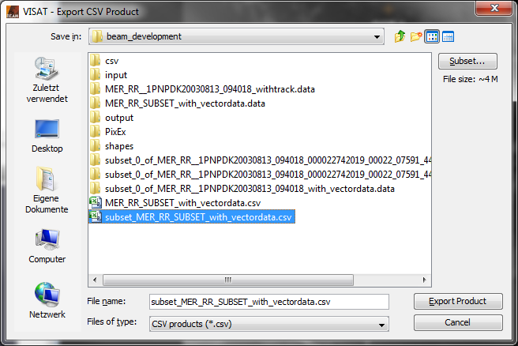

| Export CSV Data | |
BEAM/Visat supports the export of raster data as CSV ('Character Separated Value') data into plain text files. To invoke this export, choose the item 'Export Raster Data' --> 'CSV' from the BEAM/Visat 'File' menu. A file chooser dialog will be displayed to select an export file (extension .csv). By default, all bands, tie point grids and metadata sets will be exported to the CSV file (row by row from top to bottom of the product raster, each row from left to right. Each pixel is represented by one line in the CSV file, each quantity by one column. An additional column with the 'featureId' (which is just an ascending pixel counter) is put in front. Also, the file contains a header line with the names and data types for each column (name and data type separated by ':'). The column separator is the 'tab' character. See example below.

CSV exports of a whole product would usually become very large. Therefore, the export functionality offers the opportunity to define subsets: either spatial subsets, or subsets by choosing only distinct bands, tie point grids or metadata items. To define the subset to be exported, click the 'Subset...'-button in the upper right of the export file chooser dialog. The Specify Product Subset dialog will be opened for subset specification.

featureId radiance_8:float radiance_10:float l1_flags:byte latitude:float longitude:float sun_zenith:float zonal_wind:float
0 13.244587 9.0632085 2 58.19586 11.328176 39.820213 3.1320314
1 13.244587 9.0632085 0 58.194206 11.345581 39.813232 3.0703127
2 15.124778 11.723249 0 58.192554 11.362987 39.806255 3.0085946
3 21.126123 23.472494 2 58.190978 11.380392 39.799282 2.9468756
4 21.126123 23.472494 8 58.189247 11.397799 39.792366 2.8851564